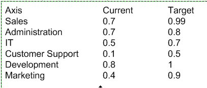
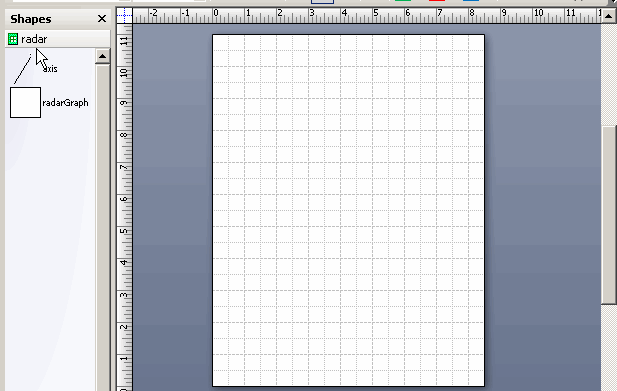

Details
File Name: rg.zip
Date Published: 12/22/2019
File Size: 82 KB
The archive contains the following files:
- radar.vss - the template for Visio 2007, 2010
- radar.vssm - the template for Visio 2013 and later version
- data.txt - text data example
- data.xlsx - Excel data example
The stencil contains the master and macros needed to automatically create a Radar Graph. Macros are called through the context menu of the shape.
Shape stores data and can be switched both to data display and chart display. Switching through the context menu.
Data can be entered via the clipboard or imported from an external text or Excel file.
Data format
Sample data is shown in the picture.

Lines must be separated by a line feed.
The columns in the row are separated by the tab character.
The first column contains the name of the axis. The other two columns are two dimensions.
Install Instructions
1. Download the archive and unzip it
2. Copy the appropriate stencil file to the "My Shapes" folder in your "Documents" or "My Documents" folder, which will be located on a path that looks similar to this:
C:\Documents and Settings\yourname\My Documents\My Shapes
or:
C:\Users\yourname\Documents\My Shapes
You must use .vss for Visio 2010 and earlier or .vssm for Visio 2013 and later versions.
Using the Radar Graph stencil
Open the stencil in the Shapes window. In Visio 2007 go to the File menu, point to Shapes, and then point to My Shapes. In Visio 2010 and later, click on More Shapes in the Shapes window, and then point to My Shapes. The stencils will be listed in the My Shapes menu.
Transfer the master shape from the stencil to the drawing page.
The rest of the work is through the context menu of the shape.
Functions of the context menu:
Show Data - switches to data view
Show Graph - switches to chart view
Redraw Graph - deletes a chart and draws it again
Open Text File - import data from a text file
Open Excel File - import data from an Excel file

System Requirements
To use this stencil, you must have desctop version Microsoft Visio 2007 or a later version. Both professional and standard versions are suitable.
Windows XP 7 and later.
If you need to change the functionality, write comments.